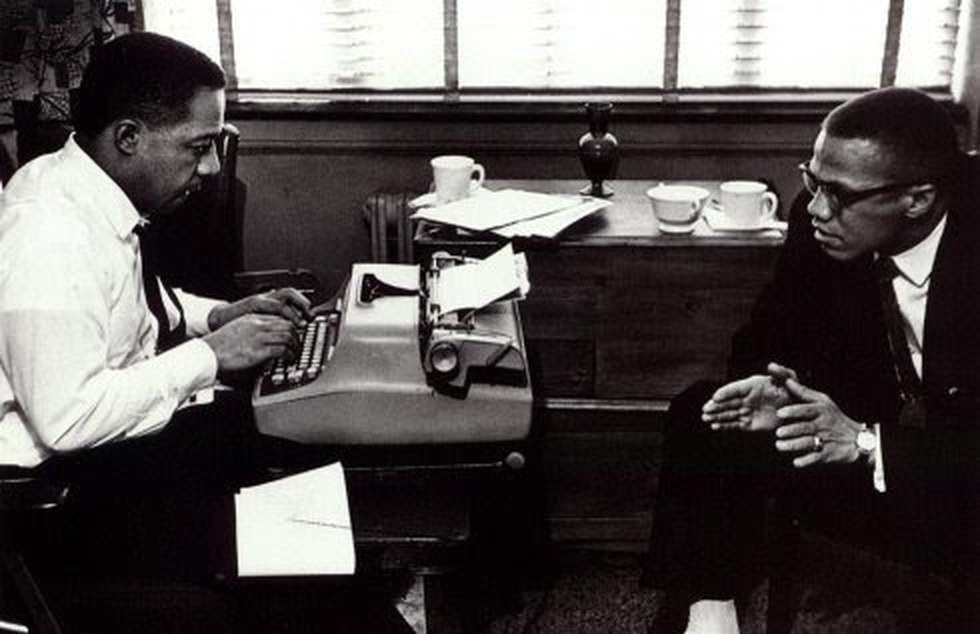

The Corridor
Why the best thinkers you know don’t post.

The best thinkers I know do not post, though they are the people with the most to say. Their best ideas come out in the ten minutes after a meeting when the useful part finally starts (the part that was never on the agenda), or to one person over coffee who kept pushing until they gave the real answer. Then the ideas stay in the room.
For five thousand years, written history has belonged to the people who think at a desk, while everyone else was invisible. If you wanted to be heard past the room you were standing in, you paid in hours of writing. It was a brutal price but a useful one, because it meant any piece of writing was proof that somebody had stopped and thought.
When that price went to zero eighteen months ago, writing stopped being proof of anything.
Being heard was never free, though. The cost of it did not vanish when the writing got cheap; it only changed into something else. What you pay now is performance: knowing the algorithm, posting daily whether you have anything to say or not, maintaining a version of yourself in public that the feed will reward. Performing is a real skill (some people are genuinely good at it) that has nothing to do with knowing things. The feed picks whoever is willing to perform, while the people who know the most keep their mouths shut.
Everything fake grew in that silence. A marketplace the masters never walk into is just a stage.
Socrates wrote nothing, so we have him only because a student in the room wrote it down. Malcolm X did not write his autobiography either: he talked, for two years, while Alex Haley sat there and caught it (Haley kept the notes Malcolm scribbled on napkins between sessions). Take Haley out of the room and there is no book. I think about how many Malcolms we lost because nobody was sitting there.
The gap between saying something and writing it down is what I call the corridor. Nearly everything worth keeping walks into it and does not come out. The corridor does not filter by quality; it filters by friction. Friction kills the best thing you said all year as easily as it kills your filler.
Every writing tool I have ever used sits at the wrong end of that corridor. They are all the same machine: you open an empty box, you type an instruction, it invents something out of nothing. That is a ghost, really. The other machine you can build (and the only one worth building) is a witness: something that sits in the room when you say the thing, then writes down what you meant, in your voice, nothing else.
Nobody should have to be their own Alex Haley.
Performing has always been the cheap edge. Take it away, let everybody be heard, and the only thing left to compete on is knowing something worth saying. Mastery would finally count.
Somewhere in your last two weeks is the best thing you would have published this year. You said it out loud, to one person, in passing, and thought nothing of it.
It died in the corridor.